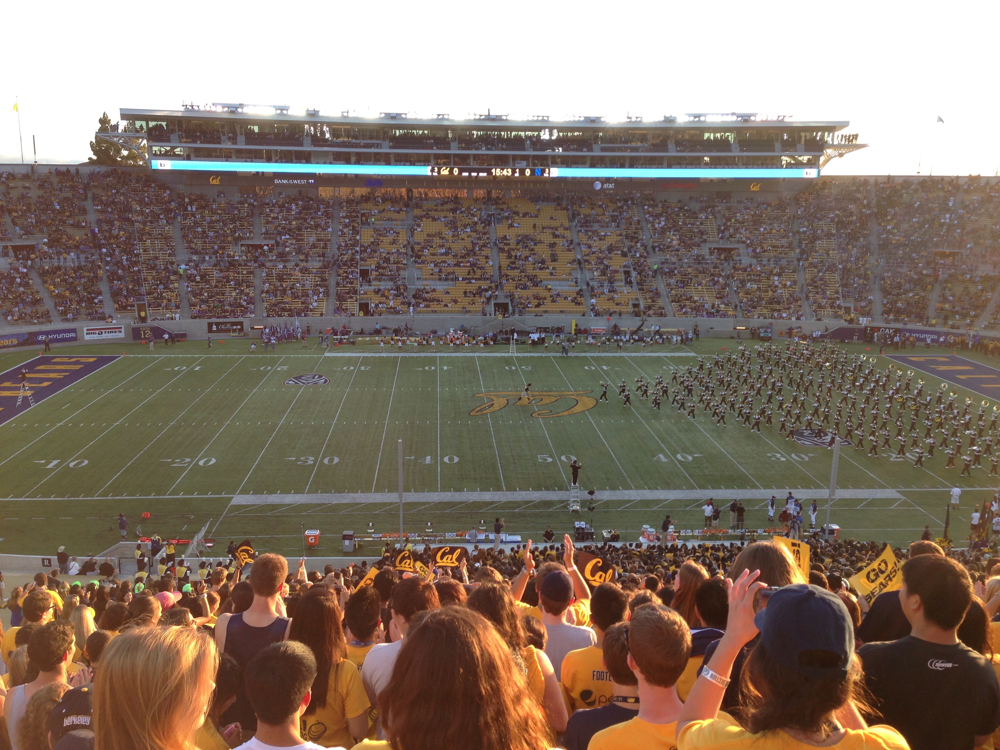

|
I am currently a Sophomore at UC Berkeley studying Industrial Engineering and Applied Mathematics with a focus in finance.
This coming Fall I will be taking courses focusing on Technology Firm Leadership (IEOR 171), Industrial and Comercial Data Systems (IEOR 115), Nonlinear Optimzation (IEOR 160), and Introduction to Real Analysis (Math 104).
I also plan on taking Graduate Courses in Financial Engineering (IEOR 221, 222, & 223) from Spring 2016 to Spring 2017.
Here is a list of my relevant coursework.
In my spare time I enjoy running, backpacking, camping, hiking, and general outdoors activities. I have a keen interest in alternitive energy and the space industry, and continually learning new skills outside of my curriculum.
Additionally I have a strong passion for problem solving and financial markets, and I hope to enter into the financial or consulting industries with my technical skill set upon graduation.
|
 |
|
On campus I am involved with my fraternity, Phi Kappa Psi, and serve as the housing manager. This position entails facilitating requests or concerns from any of our 90+ members, as well as managing the property, including the living space for the 60 members that live on site.
It has left me well equipped to deal with delegation, interaction with multiple entities, the coordination of projects, and the opportunity to lead a team of four members to handle the day to day operations of the fraternity house.
|